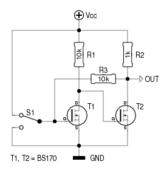

Vorige: Sturingen.
Omhoog: Sturingen.
Volgende: Belastingen schakelen.
Inhoudsopgave
Index
Flipflops bedienen met één of meer druktoetsen.
Flipflops zijn er in alle maten en gewichten. Hier is een poging
gedaan om, met eenvoudige onderdelen, een verzameling samen te
stellen waarin iedereen wel iets naar zijn gading kan vinden.
Eén druktoets en een opamp.
De werking is eenvoudig: R1 en R2 vormen een spanningsdeler, die
de spanning op A ―de inverterende ingang (pin 2) van
de opamp― op de helft van de voedingsspanning houdt. R3
en R4 zouden hetzelfde doen, ware het niet dat R5 ook zijn zegje
heeft. Als de uitgang van de opamp hoog is, dan is de spanning
op B 2/3 van de voedingsspanning; is de uitgang laag,
dan staat op B 1/3 van de voedingsspanning. Na verloop
van tijd staat over condensator C1 dezelfde spanning als op de
uitgang van de opamp. Laten we er van uitgaan, dat deze laag is.
Bij een ideale opamp is dat 0Volt, maar in de praktijk kan dat
ook 1V zijn. Op B staat dus 1/3 van de
voedingsspanning.
Wordt er nu op Dr1 gedrukt, dan zakt de spanning op A
tot onder het niveau op B. Hierdoor wordt de uitgang van
de opamp hoog, en stijgt het niveau op B tot 2/3 van
Vcc. Bij het lossen van Dr1 blijft deze toestand behouden. Maar
ook als DR1 ingedrukt blijft, veranderd er niets meer. Het is
pas na het lossen van Dr1 dat R6 de kans krijgt C1 op te laden,
waarna een volgende druk op Dr1 de flipflop opnieuw zal
laten omklappen.
Een handig dingetje, voor wie bij het bouwen van een schakeling
nog ergens een opamp te veel heeft.
Eén druktoets en 2 inverters.
Dit werkt ongeveer als de voorgaande. Via R1 wordt de ingang van
N1 op hetzelfde peil gehouden als de uitgang van N2. N1
inverteert dat niveau, geeft het door aan N2, die het nogmaals
inverteert. En zo blijft alles zoals het is...
Ondertussen wordt C1 via R2 langzaam opgeladen of ontladen tot
een niveau dat het tegenovergestelde is aan hetgeen op de ingang
van N1 staat. Een korte druk op Dr1 laat N1 omklappen, waardoor
ook N2 omklapt en via R1 deze nieuwe toestand stabiel houdt.
Ook hier heeft het langer indrukken van Dr1 geen verder effect,
evenmin als mogelijke contactdender.
Bruikbare inverters zijn de 74HC04 en de 74HC14 voor
5V-toepassingen, of de 4049 en de 40106 voor spanningen tot
15V. Een stel NAND-poorten kan ook dienst doen; de tweede ingang
kan met de positieve voedingsrail verbonden worden of simpelweg
samen met de andere ingang. En met NOR-poorten gaat het
uiteraard ook, als de tweede ingang met GND verbonden wordt.
Eén druktoets en 2 FET's.
De schakeling links is in wezen hetzelfde als de schakeling met twee
inverters, met dit verschil dat de inverters gevormd worden
door een stel FET's; een BS170 doet het goed in een
toepassing als deze.
Deze variant kan meer stroom sinken dan de overige schakelingen,
maar minder stroom sourcen. Een voordeel is, dat R4 kan vervangen
worden door een kleine belasting - de spoel van een
relais1,
bijvoorbeeld. Een tweede voordeel is het feit dat de
voedingsspanning tot 12V2 mag
bedragen voor de BS170.
Als we zwaardere FET's gebruiken zoals het schema rechts toont,
kan één van hen rechstreeks een zwaardere belasting
schakelen, en dat op een hogere spanning. Enkele zener-dioden
moeten beletten dat de gate/source-spanning hoger wordt dan
toegestaan.
En nee, je kan de FET's niet zomaar vervangen door
NPN-transistors! Stel, dat je op de plaats van T2 een
NPN-torretje zou plaatsen. De basis/emitter-overgang zal dan
beletten dat de spanning op de basis hoger wordt dan 0.6V. Het
gevolg hiervan is, dat de spanning over C1 evenmin hoger wordt
dan 0.6V.
Onmogelijk is het echter niet. T1 en T2 moeten dan elk een eigen
basisweerstand krijgen.
Anderzijds is de prijs van een BS170 amper hoger dan die van een
BC550...
Met reset-functie.
Als we NAND-poorten gebruiken, kunnen we een extra-functie
toevoegen. Bij de voorafgaande schakelingen weten we niet, welke
toestand deze zullen aannemen na het inschakelen van de
voedingsspanning. Soms heeft dat geen belang, maar voor bepaalde
toepassingen kan het een dwingende eis zijn, dat de uitgang v/d
flipflop bij het inschakelen laag is.
Het schema hiernaast toont hoe dat kan opgelost worden: op het
ogenblik dat de schakeling spanning krijgt is C2 ontladen. Pin 1
van N1 is dus laag, zodat de uitgang van N1 hoog wordt. N2
inverteert deze toestand, waardoor de uitgang laag wordt en zo
blijft. Na korte tijd is C2 opgeladen door R1 en fungeert de
schakeling op dezelfde manier als zijn companen.
Indien de uitgang om een bepaalde reden hoog moet zijn bij het
inschakelen, volstaat het om Pin 1 van N1 aan Vcc te leggen en
Pin 4 van N2 met het R1/C2 te verbinden.
Eén druktoets en een “echte” flipflop.
We zouden haast vergeten dat het met een echte flipflop ook kan.
Ditmaal met een D-flipflop uit de 4000-serie, de
40133. Hiernaast een schakeling die, bij elke druk op de
toets, een motortje-met-vertraging de andere kant opstuurt tot
de eindstop aldaar bereikt is.
R2 en C2 zorgen voor een reset bij het inschakelen van de
voedingsspanning. Na die reset zijn de in- en uitgangen van de
4013 zoals ze in het blauw zijn aangegeven. Bij het indrukken
van Dr1 wordt het niveau op D1 ingeklokt en doorgegeven naar Q1.
_Q1 klapt ook om, zodat aan D1 het tegeovergestelde niveau komt
te staan, dat bij een volgende druk op Dr1 aan Q1 zal worden
doorgegeven.
Mini-uitvoering.
Als het allemaal erg klein moet zijn, kan de SN74LVC1G80
goede diensten bewijzen. Dit is een D-flipflop in
mini-verpakking. De gebruikelijke Q-uitgang ontbreekt. Maar
gelukkig is diens geïnverteerde tegenpool wel aanwezig, die we
op dezelfde manier als hierboven gebruiken om de uitgang bij
elke druk op de toets te doen omklappen.
“Power” mini-uitvoering.
 Deze bevat wat meer onderdelen dan de voorgaande, maar daar
staat tegenover dat hij een niet al te grote belasting
rechtstreeks kan schakelen.
Deze bevat wat meer onderdelen dan de voorgaande, maar daar
staat tegenover dat hij een niet al te grote belasting
rechtstreeks kan schakelen.
Hier zien we weerom twee inverters, een meekoppeling waar R2
voor zorgt, en een weerstand (R1) die condensator C1 van een
tegenovergestelde spanning voorziet. Niets nieuws, dus.
Ook de FET, die niet enkel als inverter fungeert maar tevens
een belasting schakelt, hebben we al gezien.
Nieuw is de NC7S14. Dat is één inverter met een
Schmitt-trigger ingang, die verpakt zit in een minuscule
behuizing. Ware SMD-liefhebbers kiezen voor T1 uiteraard ook een
SMD-exemplaar. Liefst een type dat aan 5V gate/source-spanning
genoeg heeft om volop in geleiding te gaan.
Alhoewel, de NC7S14 mag desnoods met 6V gevoed worden...
Met een 555.
Ook een 555 is voor het doel geschikt.
We kunnen de interne flipflop immers setten door de spanning op
de TRIGGER-ingang lager te maken dan 1/3 van de
voedingsspanning, en we kunnen hem resetten door de spanning op
de THRESHOLD-ingang hoger te maken dan 2/3 van de
voedingsspanning. Doordat R2 en R3 beide ingangen op de helft
van de voedingsspanning houden, blijven die inactief.
Bij het inschakelen van de voedingsspanning zorgt C2 er voor,
dat de interne flipflop gereset wordt, waardoor er 0Volt op de
uitgang komt te staan. Ook over C1 staat er geen spanning.
Drukken we nu op Dr1, dan krijgt de TRIGGER-ingang een
neergaande puls4, hetgeen tot gevolg heeft dat de uitgang hoog
wordt. Via R1 wordt C1 nu opgeladen. Bij een volgende druk op
Dr1 is het de THRESHOLD-ingang die reageert, en de uitgang terug
laag maakt.
Met twee druktoetsen.
Met 2 toetsen, één voor het inschakelen en één voor het
uitschakelen, wordt het nog een stuk eenvoudiger. Hiernaast zien
we buffer5 N1, die zijn toestand stabiel houdt met
meekoppel-weerstand R1. Drukken op de “ON” toets forceert
het geheel naar een hoog niveau; drukken op de “OFF” toets
doet net het tegenovergestelde.
Een 4050 doet het uitstekend bij een voedingsspanning
tussen 3Volt en 15Volt.
Ook de opamp uit de eerste schakeling kan
op deze wijze ingezet worden. R6 en C1 vallen dan weg, en naast
Dr1 komt een tweede toets tussen Vcc en A.
Er is echter een belangrijk verschil: drukken op de toets die
met Vcc verbonden is zorgt er voor dat de uitgang laag wordt!
Het kan natuurlijk anders, door de toetsen met B te
verbinden.
Daarnaast is het niet onverstandig, in serie met elke toets een
weerstand op te nemen, teneinde kortsluiting te voorkomen als
iemand beide toetsen gelijktijdig indrukt. Eén weerstand in serie
met de ON-toets is wellicht nog beter. Dan gaat de schakeling op
“uit” als iemand beide toetsen gelijktijdig indrukt.
470R is een goede uitgangswaarde, maar kleiner of groter kan
natuurlijk ook, zolang R1 maar kleiner is dan de helft van R2.
Of met een wisselschakelaar.
Die druktoetsen kunnen uiteraard vervangen worden door een
wisselschakelaar. We hebben dan een prima anti-dender schakeling,
waarvan de uitgang alle mogelijke contactdender negeert.
De schakelaar kan uiteraard een druktoets met wisselcontacten zijn.
Hier is gebruik gemaakt van twee inverters in plaats van de buffer
bij de vorige schakeling.

Die twee inverters kunnen ook twee FET's
zijn, bijgestaan door enkele weerstanden.
Door het toevoegen van een extra-weerstand, kunnen ook bipolaire
transistors ingezet worden.
Met meer dan twee standen.
Wie niet tot de Arduino-generatie behoort, heeft vast een
4017 op voorraad liggen. Ook die kan ook ingezet worden.
Het schema hiernaast toont een 3-standen schakelaar.
C2 zorgt er voor, dat de 4017 een korte reset-puls (op CLR)
krijgt bij het inschakelen van de voedingsspanning, zodat
uitgang Y0 hoog wordt.
Bij elke druk op Dr1 worden achtereenvolgens Y1 en Y2
hoog. Zodra Y3 hoog wordt, maakt die CLR hoog, waardoor Y0 terug
aan de beurt is.
Door CLR met een andere uitgang te verbinden, kan het aantal
tellerstanden uitgebreid of ingekrompen worden.
CLR verbinden met Y1 kan ook. Op Y1 verschijnt dan een
kortstondige naaldpuls, telkens Dr1 contact maakt.
Voetnoot
- ...relais
1
-
vergeet de vrijloopdiode niet!
- ...12V
2
-
maximum 15V gate-source spanning volgens de datasheet, maar een verstandig ontwerper blijft daar enkele Volts onder
- ...4013
3
-
voor TTL-schakelingen is een 74HC74 beter geschikt
- ...puls
4
-
de THRESHOLD-ingang krijgt die puls ook, maar reageert er niet op
- ...buffer
5
-
Géén inverter! Twee inverters in serie kan wèl
Vorige: Sturingen.
Omhoog: Sturingen.
Volgende: Belastingen schakelen.
Inhoudsopgave
Index
Pros Robaer - 2012